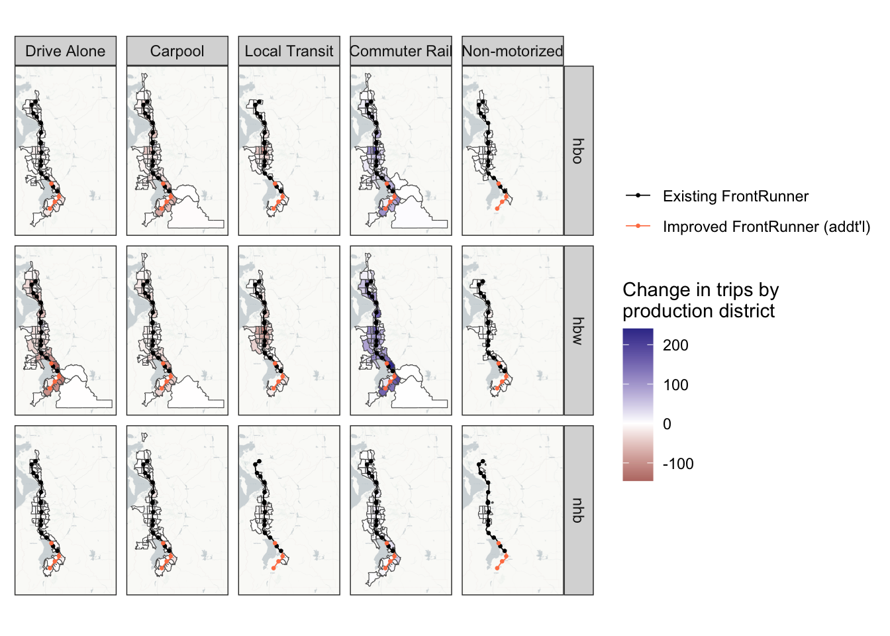
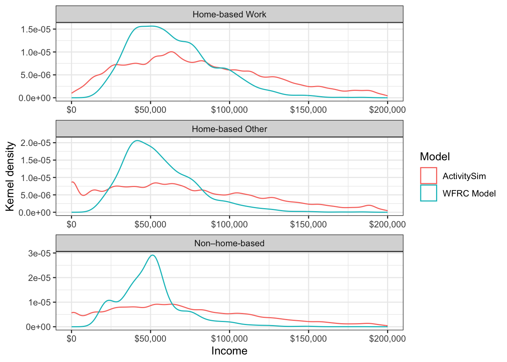
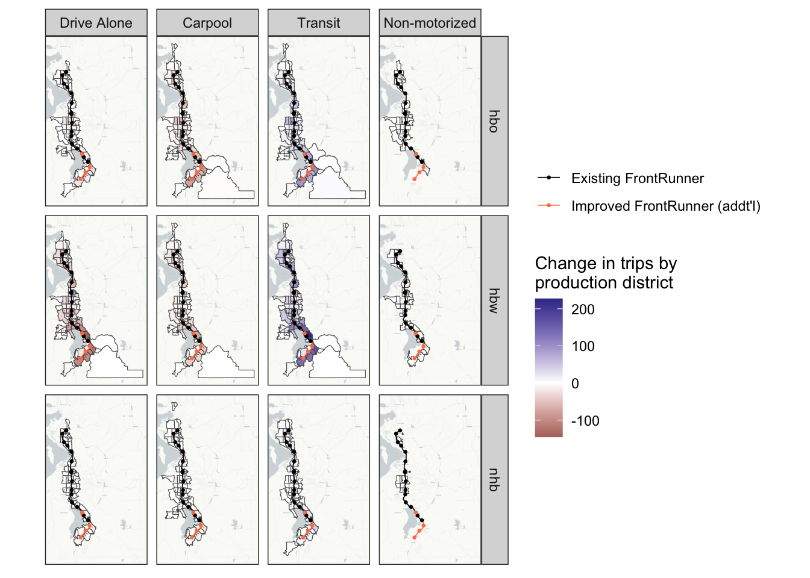

5 Scenario 2: Increased Transit Service
The FrontRunner is a commuter rail line between Provo and Ogden, Utah, with several stops in-between. Currently, there is only one set of tracks for much of the line, and train crossings are only possible near stations. Because of this, headways are quite large, with trains running every half-hour in peak periods and hourly in off-peak periods. Additionally, trains occasionally need to wait for each other in order to cross paths.
There is a planned improvement to the FrontRunner that would “double-track” the entire route, allowing trains to pass each other at any point. This would allow for much smaller headways, which are currently planned at 15 and 30 minutes for peak and off-peak periods respectively (half of the current headways). The improvement would also partially electrify the FrontRunner, allowing for faster travel speeds, and extend the track farther south with additional stops.
This scenario models these planned improvements to the FrontRunner. The scenario adjusts the headways to 15/30 minutes for peak/off-peak service, increases travel speeds, and adds additional stops in Vineyard, Springville, Spanish Fork, and Payson. Figure 5.1 shows the FrontRunner network with the modeled changes. No other modifications were made to the baseline scenario; for example, a revised bus service network serving the Springville station is not included.
5.1 Scenario Creation
In the WFRC model, this change is relatively easy to implement. The headways are stored directly in the input data and are easily modified, and a year-2050 network with increased speeds and additional stations is already built into the model for future-year analysis. The only additional change needed was to turn on the “park and ride” flag in the highway network at each new station. Wasatch Front Regional Council (WFRC)
To implement this scenario in ActivitySim, only updated travel skims are needed. As in the baseline scenario, the updated transit skims output from the WFRC model’s network assignment in this model scenario are taken directly as inputs to ActivitySim. Because the mode share of transit is relatively low, it is not expected that the highway travel times will be affected very much by this change, and so the highway skims from the baseline scenario are used directly and not updated for this scenario. No other changes to ActivitySim are necessary to model this scenario.
5.2 Scenario Analysis
| purpose | mode | cube_tr | cube_by | cube_diff_pct | asim_tr | asim_by | asim_diff_pct |
|---|---|---|---|---|---|---|---|
| hbo | auto | 4095127 | 4096688 | 0.000 | 3050647 | 3042754 | 0.003 |
| hbo | nonmotor | 510103 | 510143 | 0.000 | 593154 | 591164 | 0.003 |
| hbo | transit | 38912 | 37346 | 0.042 | 220137 | 218438 | 0.008 |
| hbw | auto | 1582865 | 1586414 | -0.002 | 1286434 | 1288620 | -0.002 |
| hbw | nonmotor | 76396 | 76506 | -0.001 | 191827 | 191880 | 0.000 |
| hbw | transit | 52380 | 48752 | 0.074 | 191873 | 189610 | 0.012 |
| nhb | auto | 2224420 | 2224878 | 0.000 | 1646759 | 1645356 | 0.001 |
| nhb | nonmotor | 146409 | 146404 | 0.000 | 224443 | 224248 | 0.001 |
| nhb | transit | 13870 | 13453 | 0.031 | 104323 | 103398 | 0.009 |

With greater access the commuter rail by decreasing the headways, we wanted to see how the ridership changed in this scenario. We also wanted to see where the commuter rail riders were coming from.
Analyzing this with the trip-based model was straightforward since one of the outputs is a file listing the amount of trips made by each form of transit. There are also more detailed matrices that shows commuter rail transit (CRT) trip productions and attractions. There is a matrix for driving to the CRT and a matrix for walking to the CRT. With these matrices and the taz shape file, we were able to to visualize the catchment area in a plot like (another figure that we can show)
Implications: We saw that there was more than a 30% increase in commuter rail transit trips in this scenario but not much change in the other transit trips. We could see the areas where peoples’ CRT trips began on a zonal and a district level and noticed a big increase in the people coming from zones that were closer to the new stations that were part of the extended rail line. (I think more can be added here as well)
Limitations: Apart from the increase in CRT trips and the catchment areas, there wasn’t much more we could see with the trip-based model. By connecting the catchment areas with what we know of the zonal SE data, we could make some assumptions about the income of the new people taking the commuter rail, but we couldn’t find anything more about the demographics of the riders.
| purpose | transit_trips | TOTHH | ALLEMP | med_income |
|---|---|---|---|---|
| hbo | 38912 | 456 | 426 | 51230 |
| hbw | 52380 | 468 | 357 | 60187 |
| nhb | 13870 | 103 | 1365 | 50921 |
| purpose | transit_trips | income | age |
|---|---|---|---|
| hbw | 191873 | 69064 | 36 |
| hbo | 220137 | 58326 | 24 |
| nhb | 104323 | 63814 | 32 |

Figure 8 shows the increased productions and attractions of the “drive to CRT” mode by district. These could as an example be further analyzed by TAZ/district median income or similar variables. However, there is no indication of which types of individuals are switching their mode. In an ABM, this can be analyzed. Figure 9 shows the trips that switched modes from the base scenario, as well as which mode they switched to. Though some of this switching is due to the internal randomness in ActivitySim, the majority of the mode-switching was from auto to transit, and this shows a clear increase in transit usage over the base scenario.
ActivitySim also has an “at-work” tour purpose, indicating a subtour from the workplace. The team analyzed the trip modes of these subtours for the individuals who switched to transit for their work tour. Figure 10 shows that most people did not switch subtour modes from the base scenario. The similar number of switches between auto and non-motorized modes indicates that the switching here may be mostly due to ActivitySim’s randomness and not any changes in the network.

